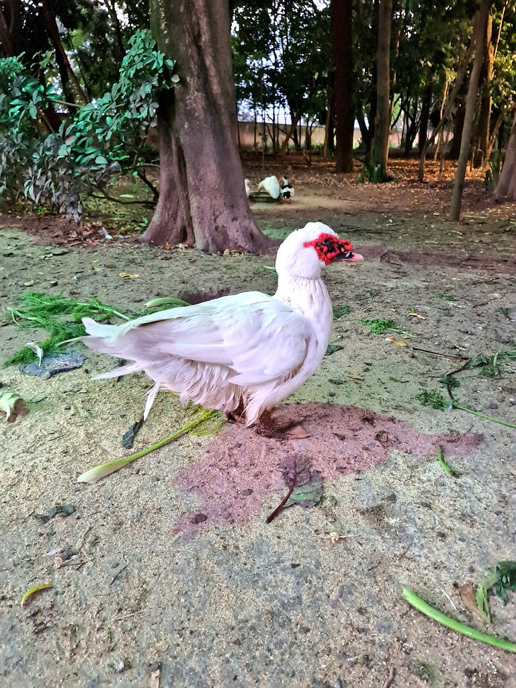

Hello, it's nice to have you here!
I am building this site to share my ideas and talk about things that I like. It is under heavy construction!
Pages
About me
I am a devout Roman Catholic ✝ (c. 2024) that likes to solve problems and build new things by writing software and talking to people.
The following is a port of the things in my old site. These will not be here for long, as I am planning on expanding and making new sections.
Q&A
Where can I follow you?
(please don't follow me in real life)
You can send me a DM at Linkedin:
https://www.linkedin.com/in/gustavo-depaula/
Follow my art page at twitter:
https://twitter.com/ClassicalCharm
Let's play chess:
https://www.chess.com/member/dpgu
Here's my Github:
https://github.com/gustavo-depaula
Why do you use Comic Sans?
Because it's the best font ever invented, for everything. And because I know nothing about typography.
I also use it for coding and love it: https://github.com/dtinth/comic-mono-font
Wholeheartedly recommend trying it. For me, it helped with me stopping misreading words and swapping letters/words.
There's also an interesting side-effect. People tend to unfairly ridiculize Comic Sans. So the content you write on it needs to be really good to breakthrough this initial prejudice.
Do you have any hobbies?
I do! Glad you asked!
Here's a list of topics I'm interested in:
- Chess (add me on chess.com!)
- Language learning (currently learning 🇫🇷French 🇫🇷)
- Board Games, I really like these ones:
- Digital Games
- Walking in the park
- Finance/Investing
- Discovering classical art through https://artvee.com/
-
Music
- recently, I've bought a vynil of Future Nostalgia, by Dua Lipa
- let's do a Spotify Blend!
What's your favorite piece of (neo-)classical art?
"When The Heart Is Young" (1902)
John William Godward (1861-1922) 🇬🇧

Download it here: https://artvee.com/dl/when-the-heart-is-young/
Have you watched Hamilton?
Yes. Yes. YES. Absolutely loved it.
Here's a list of some of my favorite lines:
Hamilton doesn't hesitate
He exhibits no restraint
He takes and he takes and he takes
And he keeps winning anyway
He changes the game
He plays and he raises the stakes
Why do you write like you're running out of time?
Write day and night like you're running out of time?
And when my time is up
Have I done enough?
Eliza, I don't have a dollar to my name
An acre of land, a troop to command, a dollop of fame
All I have's my honor, a tolerance for pain
A couple of college credits and my top-notch brain
You have no control who lives, who dies, who tells your story
I know that we can win
I know that greatness lies in you
But remember from here on in, history has its eyes on you
Love doesn't discriminate
Between the sinners and the saints
It takes and it takes and it takes
And we keep loving anyway
Death doesn't discriminate
Between the sinners and the saints
It takes and it takes and it takes
And we keep living anyway
Here's also a list of things you should see after you've watched the musical:
- Lin-Manuel Miranda Performs at the White House Poetry Jam: (8 of 8)
-
Hamilton cast performs "Alexander Hamilton" at White
House
- (also watch the follow-ups: https://www.youtube.com/playlist?list=PLKV-NbgfXV0n71jqug5xZhjAUfqaTuau_ . I was not able to find all the songs, if you find it, PLEASE send it to me.)
- Hamilton and Motifs: Creating Emotional Paradoxes
- All deleted songs from Hamilton
Recommended readings:
- The real-life election of 1800 was even wilder than Hamilton the musical lets on
- Hamilton's Financial Plan
- Interactive Constitution
- Federalist No. 10
-
The Jefferson Monticello
- especially Paradox of Liberty
-
Elizabeth Schuyler Hamilton
- a sad story: Angelica Hamilton
- Gilbert du Motier, Marquis de Lafayette
Where did you study?
I did high school at the Technical School of the Federal University of Minas Gerais (Coltec-UFMG). There, I graduated in Technician in Systems Development. I'm grateful I had the opportunity to go there and glad I made the choice (one of the best I made in my life!).
Currently, I'm doing BSc Computer Science in a distance learning program in Goldsmiths, University of London.
When will you graduate from your university?
Please don't ask.
What languages do you speak?
Currently:
- 🇧🇷 Portuguese
- 🇺🇸 English
Learning:
- 🇫🇷 French
Want to learn:
- 🇪🇸 Spanish
- 🇮🇹 Italian
Maybe:
- 🇩🇪 German
- 🇮🇹 Italian
By any chance, have you taken a photo of a majestic duck?
Yes, I do! This one was found in "Parque da Água Branca", São Paulo.
